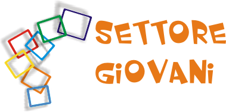
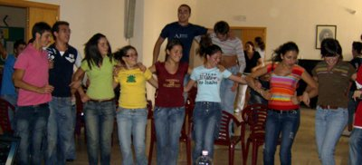

REGOLAMENTO
PER IL CONCORSO DI CORTOMETRAGGI
“IN DIALOGO”
- tra parole e immagini -

• La partecipazione al concorso è aperta a tutti i Giovanissimi e Giovani
di A.C. e simpatizzanti.
• La partecipazione è assolutamente gratuita.
• Possono partecipare singoli autori o gruppi, anche interparrocchiali, con una o più opere. I filmati devono avere una durata massima di 15 minuti, compresi i titoli, pena l'esclusione dal concorso.
• Il tema del concorso è il “DIALOGO”. I cortometraggi non dovranno contenere materiale che possa creare offesa o danni a terzi.
• Per partecipare al concorso, ogni autore o gruppo dovrà inviare:
• la scheda di adesione compilata in ogni sua parte e sottoscritta, nella quale si attesta di conoscere le condizioni poste dal regolamento;
• l'autorizzazione all'uso delle immagini degli attori partecipanti;
• due copie DVD. Sulla custodia e sul dorso delle copie dovranno essere indicati, in stampatello, il titolo dell'opera, la durata e il nome dell'autore;
• Le opere e le relative schede dovranno essere consegnate all'equipe diocesana del sett. Giovani o inviate entro e non oltre il 10 Aprile 2007 .
• L'invio del materiale è a carico dei partecipanti. Si consiglia l'utilizzo di posta raccomandata indicando chiaramente sulla busta il seguente destinatario:
Azione Cattolica Diocesana
Settore Giovani
Via Beltrani, 9
70059 Trani
• L'organizzazione si riserva il diritto di preselezionare le opere inviate ai fini della loro proiezione in pubblico.
• Le opere vincitrici saranno proiettate nella mattinata del 22 Aprile 2007 durante l'incontro “FierA di esserCI”. Le restanti opere saranno proiettate in uno stand dell'A.C. durante la stessa mattinata.
10. Le categorie per la valutazione dei vincitori saranno tre:
• per RIFLETTERE
• per SORRIDERE
• PREMIO DELLA CRITICA
Scarica la locandina in bianco e nero
{kind=link}
{kind=link}